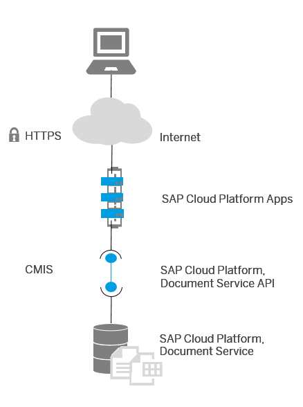

Document Service
The SAP Cloud Platform Document service provides an on-demand content repository for unstructured or semi-structured content.
Applications access it using the OASIS standard protocol Content Management Interoperability Services (CMIS). Java applications running on SAP Cloud Platform can easily consume the document service using the provided client library. A JavaScript client library is currently being developed. Since the document service is exposed using a standard protocol, it can also be consumed by any other technology that supports the CMIS protocol.
The document service is an implementation of the CMIS standard and is the primary interface to a reliable and safe store for content on SAP Cloud Platform.
Features of the document service include:
-
The storage and retrieval of files, which the file system often handles on traditional platforms
-
The organization of files in a hierarchical folder structure
-
The association of metadata with the content and the ability to read and write metadata
-
A query interface based on this metadata using a query language similar to SQL
-
Managing access control (access control lists)
-
Versioning of content
-
A powerful Java API (Apache Chemistry OpenCMIS)
-
Streaming support to also handle large files efficiently
-
Files are always encrypted (AES-128) before they are stored in the document service.
-
A virus scanner can be activated to scan files for viruses during file uploads (write accesses). For performance reasons, read-only file accesses are not scanned
-
Access from applications running internally on SAP Cloud Platform or externally
The following figure illustrates the document service's architecture:

The CMIS standard defines:
-
A domain model and service bindings that can be used by applications to work with a content management repository
-
An abstraction layer for controlling diverse document management systems and repositories using Web protocols
CMIS provides a common data model covering typed files and folders with generic properties that can be set or read. There is a set of services for adding and retrieving documents (called objects). CMIS defines an access control system, a checkout and version control facility, and the ability to define generic relations. CMIS defines the following protocol bindings, which use WSDL with Simple Object Access Protocol (SOAP) or Representational State Transfer (REST):
-
The Atom Publishing (AtomPub) Protocol
-
The JavaScript Object Notation (JSON) format
The consumption of CMIS-enabled document repositories is easy using the Apache Chemistry libraries. Apache Chemistry provides libraries for several platforms to consume CMIS using Java, PHP, .Net, or Python. The subproject OpenCMIS, which includes the CMIS Java implementation, also includes tools around CMIS, like the CMIS Workbench, which is a desktop client for CMIS repositories for developers.
Since the SAP Cloud Platform Document service API includes the OpenCMIS Java library, applications can be built on SAP Cloud Platform that are independent of a specific content repository.
The SOAP (Web services) binding is not supported.
The following features, which are defined in the OASIS CMIS standard, are supported with restrictions:
-
Versioning: Only major versions are supported
-
Versioning: No support for check-in comments
-
Query: Only metadata searches, no joins and no type aliases
The following CMIS features are not yet supported:
-
Multifiling
-
Policies
-
Relationships
-
Change logs
There is a limit for the properties of a document:
- For searchable properties, a maximum of 100 values with a maximum of 5,000 characters is allowed.
- For non-searchable properties, a maximum of 1,000 values with a maximum of 50,000 characters is allowed.
The document service can be utilized up to the following maximum limits:
-
Maximum total of 5 million objects (documents or folders) per tenant repository
-
Maximum total of 100 tenant repositories per account
-
Maximum duration of 60 seconds of a single CMISQL query
-
All requests are subject to concurrent rate control and spike limiting
If you expect to reach one or the other limitation, we recommend that you open a support ticket on BC-NEO-ECM-DS and describe your scenario.